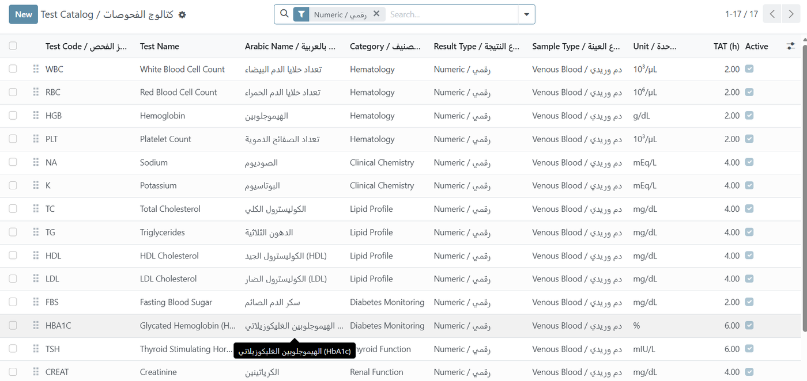
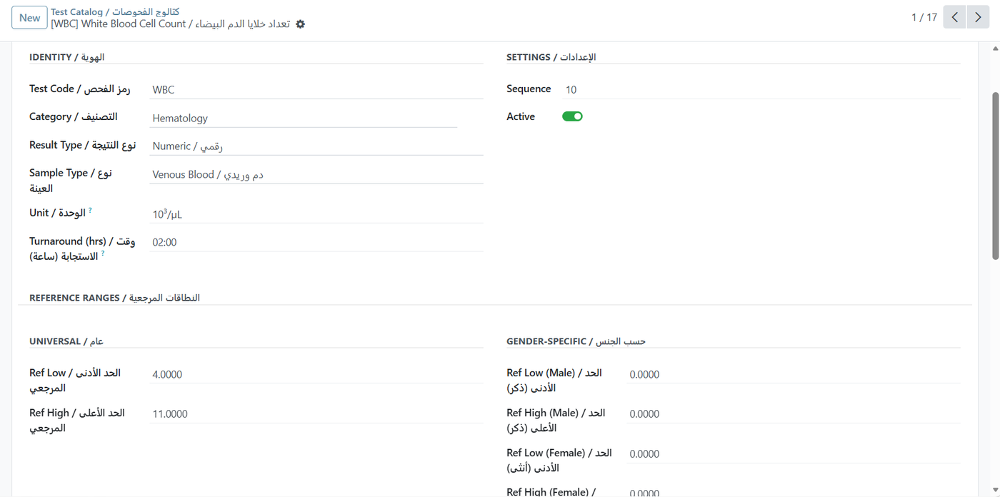
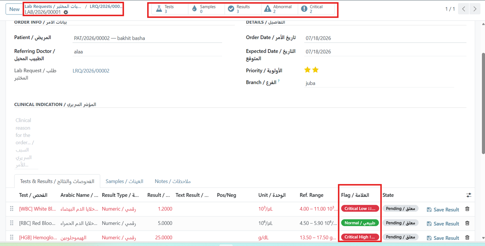
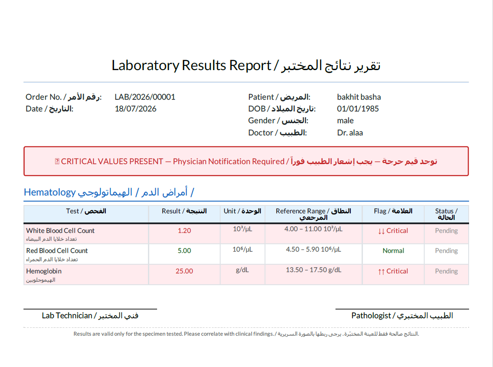

⚗
QUINZE Health Laboratory
Test catalogue, sample tracking, reference ranges and automatically flagged results with a bilingual report.
Odoo 17Reference RangesCritical FlagsSample TrackingBilingual PDF
Overview
A complete laboratory information workflow: define your test catalogue with reference ranges, track samples from collection to receipt, enter results that are automatically flagged against normal limits, and issue a bilingual report.
Bilingual by design. Every field label, selection value and report renders in English and Arabic together, so a single database serves both an English-speaking administrator and an Arabic-speaking clinician without switching languages. The screenshots below are taken with the interface language set to English.

Test Catalogue — Tests are organised by category — Hematology, Clinical Chemistry, Lipid Profile, Diabetes Monitoring, Thyroid and Renal Function — each with its own sample type, unit and turnaround time.
Order Workflow
Draft→Sample Collected→In Progress→Done

Reference Ranges per Test — Universal limits sit alongside gender-specific ones, so a result is always judged against the range that actually applies to that patient.

Automatically Flagged Results — Every value is classified the moment it is entered. Critical Low, Normal and Critical High are colour-coded inline, and header counters summarise abnormal and critical findings for the whole order.
Key Features
Test Catalogue
Organise tests by category, each with sample type, unit of measure and expected turnaround time.
Gender-Specific Ranges
Normal limits vary by patient profile, so a result is judged against the range that actually applies.
Automatic Result Flagging
Every value is classified as normal, high, low, critical high or critical low as it is entered.
Sample Tracking
Track sample type, collection time, collector and state from pending through collected, received or rejected.
Clinic Bridge
Confirming a lab request in the Clinic module creates the corresponding lab order automatically.
Critical Value Alert
Orders containing critical results carry a prominent physician-notification banner on the printed report.

Bilingual Laboratory Report — The printed report shows each test in English and Arabic with its result, unit, reference range and flag. Abnormal rows are shaded, and a banner warns when critical values require physician notification.
REST API Available
A companion module, QUINZE Health REST API, exposes authenticated JSON endpoints for lab orders — list them, read an order with its results, and submit individual results from an analyser or external laboratory system. Sold separately.
Requires: QUINZE Health Base (free) and QUINZE Health Clinic.
مختبر نظام QUINZE الصحي
نظام إدارة معلومات المختبر:
- كتالوج فحوصات منظم حسب الأقسام مع نوع العينة ووقت الاستجابة
- نطاقات مرجعية عامة وأخرى حسب الجنس
- تصنيف تلقائي للنتائج: طبيعي، مرتفع، منخفض، حرج
- تتبع العينات من السحب حتى الاستلام أو الرفض
- إنشاء أمر المختبر تلقائياً من طلب العيادة
- تقرير PDF ثنائي اللغة مع تنبيه القيم الحرجة
Technical Information
| Item | Value |
|---|
| Odoo Version | 17.0 Community & Enterprise |
| Dependencies | quinze_health_clinic |
| License | OPL-1 |
| Price | €129 |
| Languages | English and Arabic (ar_001), bilingual labels and reports |
| Automated Tests | Included |